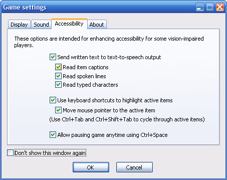
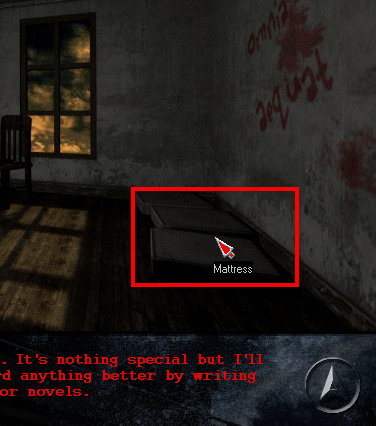

WME provides several options to improve accessibility for vision-impaired players. Firstly it's possible to send most of the written text to text-to-speech synthesizer, so that the players don't have to read captions, which are often too small or disappear too fast to be comfortable to read. Secondly it's possible to manually highlight active areas on screen using keyboard shortcuts, because normally it can be hard to spot them for people with visual disabilities. Thirdly the player can pause the game at any time (using the Ctrl+Space keyboard shortcut) to be able to read any text or examine the scene without rush.
These options are integrated directly into the game engine and once enabled, they will work automatically in any game. Of course, given the generic nature of these options, they may not always work ideally, depending on the design of each concrete game. If the accessibility options for whatever reason conflict with your game features, you can disable them altogether in ProjectMan by setting the "Allow accessibility" option to "No". But it's always a better solution to try to make your game compatible with accessibility instead of turning it off.
Individual accessibility options can be enabled or disabled in the WME startup settings window:

The options should be pretty self-explanatory. A text-to-speech synthesizer needs to be installed for the TTS options to work. It's installed by default in Windows XP, and a localized synthesizer is likely to be installed on computers of visually-impaired players.
Reading of a speech line is automatically disabled if voice-over sound exists for the line.
The manual highlighting of active items it controlled by the Ctrl+Tab shortcut. It cycles through all active areas in scene or in a focused GUI window. Alternatively, Ctrl+Shift+Tab shortcut can be used to cycle backwards. The highlight rectangle is displayed as long as the Ctrl key is held down.

In addition to the general accessibility functionality, WME also provides a couple of scripting methods and attributes in case a game developer needs to hook some game-specific functionality to the accessibility options.
To query if certain accessibility option is enabled, use the Game.Acc* attributes (see the scripting reference for a complete list).
All game objects provide a special AccCaption attribute. It is a text caption attribute used for accessibility purposes. If the "Read item captions" option is enabled, WME uses primarily the AccCaption attribute for this. If it's not set, the ordinary Caption attribute is used instead. That way you can use different captions to be displayed on screen, and different (perhaps more descriptive) captions to be send to text-to-speech output.
To explicitly output some text to the text-to-speech output, use the Game.AccOutputText() method. For example, you could include a code that will announce a room description upon entering each scene.
You should consider providing an alternate AccCaption string for any text that only appears in graphics to make your game compatible with screen-readers.
Note: Text-to-speech output is in no way intended to replace or simulate voice-overs.